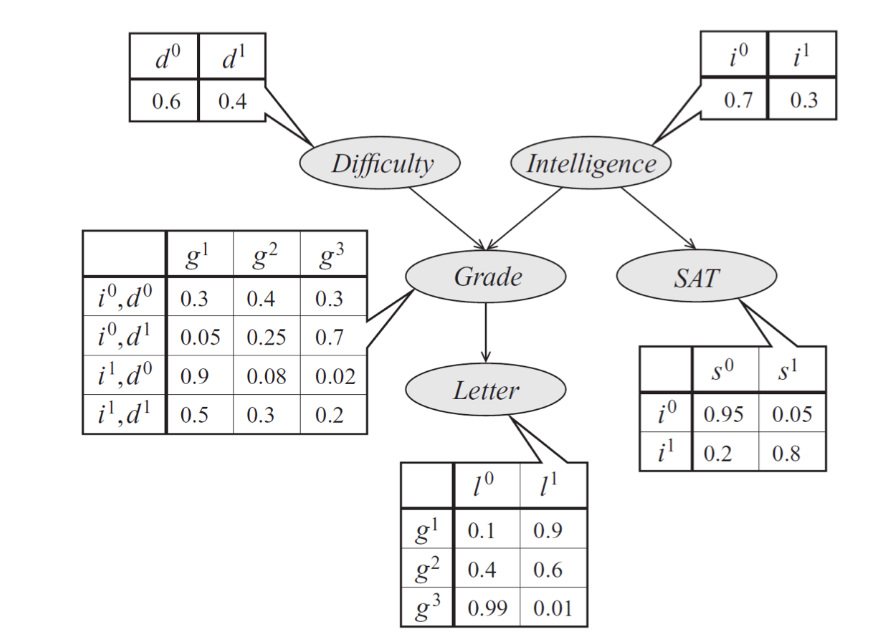
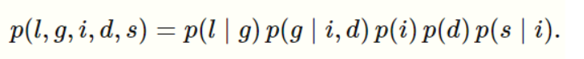
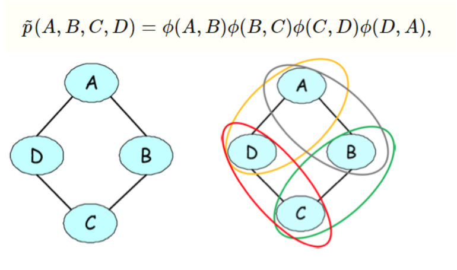

Directed graphical models (a.k.a. Bayesian networks) are a family of probability distributions that admit a compact parametrization that can be naturally described using a directed graph.
Graphical representation of a Bayesian Network
Distributions of this form can be naturally expressed as directed acyclic graphs, in which vertices correspond to variables xi and edges indicate dependency relationships.

As an example, consider a model of a student's grade g on an exam. This grade depends on the exam's difficulty d and the student's intelligence i; it also affects the quality l of the reference letter from the professor who taught the course. The student's intelligence affects the SAT scores as well. Each variable is binary, except for g, which takes 3 possible values.

The graphical representation of this distribution is a DAG that visually specifies how random variables depend on each other. The graph clearly indicates that the letter depends on the grade, which in turn depends on the student's intelligence and the difficulty of the exam.
Another way to interpret directed graphs is in terms of stories for how the data was generated. In the above example, to determine the quality of the reference letter, we may first sample an intelligence level and an exam difficulty; then, a student’s grade is sampled given these parameters; finally, the recommendation letter is generated based on that grade.
Formally, a Bayesian network is a directed graph G=(V,E) together with
A random variable xi for each node i∈V.
One conditional probability distribution (CPD) p(x|xAi) per node, specifying the probability of
xi conditioned on its parents' values.
Thus, a Bayesian network defines a probability distribution p. Conversely, we say that a probability p factorizes over a DAG G if it can be decomposed into a product of factors, as specified by G.
It is not hard to see that a probability represented by a Bayesian network will be valid: clearly, it will be non-negative and one can show using an induction argument (and using the fact that the CPDs are valid probabilities) that the sum over all variable assignments will be one.
Bayesian networks are a class of models that can compactly represent many interesting probability distributions. In such cases, unless we want to introduce false interdependencies among the variables of our model, we must fall back to a less compact representation (which can be viewed as a graph with additional, unnecessary edges). This leads to extra, unnecessary parameters in the model, and makes it more difficult to learn these parameters and to make predictions.
One way to define a probability over the joint voting decision of A,B,C,D is to assign scores to each assignment to these variables and then define a probability as a normalized score. A score can be any function, but in our case, we will define it to be of the form
